2025年北京市中考数学真题 · 数学解答题 第28题28. 在平面直角坐标系中，对于点和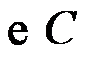给出如下定义：若上存在两个不同的点，，对于上任意满足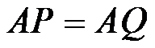的两个不同的点，，都有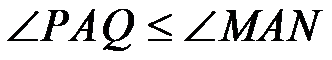，则称点是的关联点，称的大小为点与的关联角度．（本定义中的角均指锐角、直角、钝角或平角）（1）如图，的半径为．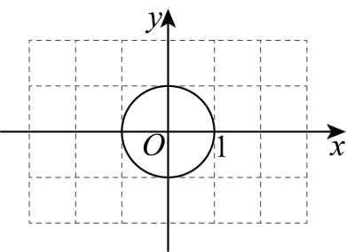①在点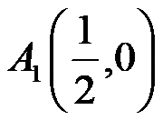，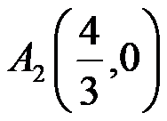，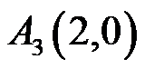中，点_______是的关联点且其与的关联角度小于，该点与的关联角度为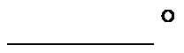；②点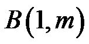在第一象限，若对于任意长度小于的线段，上所有的点都是的关联点，则的最小值为_______；（2）已知点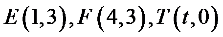，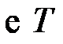经过原点，线段上所有的点都是的关联点，记这些点与的关联角度的最大值为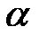．若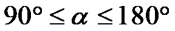，直接写出的取值范围．